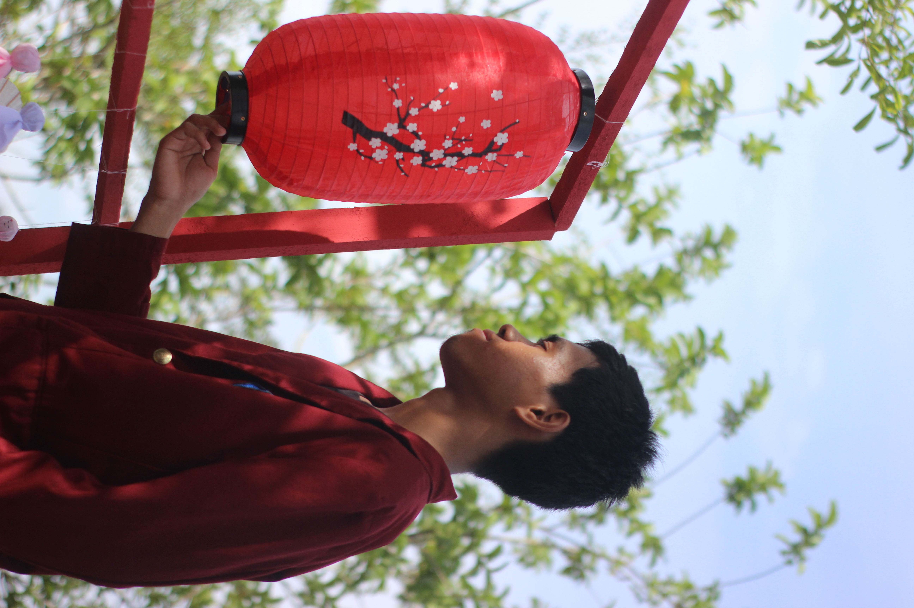

Halo, saya
ERGUS
Alumni D3 Manajemen Informatika Politeknik Negeri Sambas dengan keahlian pengembangan web menggunakan PHP, Laravel, dan CodeIgniter. Berfokus membangun produk digital yang fungsional, elegan, dan berdampak nyata.

Siapa Ergus?
"Menjadi seseorang yang bermanfaat untuk orang lain dan diri sendiri."
Saya adalah Alumni D3 Manajemen Informatika, Politeknik Negeri Sambas (A.Md.Kom). Dengan minat besar pada teknologi, saya berfokus pada pengembangan web dan telah menyelesaikan Tugas Akhir berupa Rancang Bangun Aplikasi Sistem Penerbitan SKHP Alat UTTP pada UPT Metrologi Legal Kota Singkawang Berbasis Website.
Saya senang memecahkan masalah, bekerja dalam tim, dan berpengalaman dalam mengelola tim dengan baik melalui berbagai kegiatan organisasi kampus.
Sertifikasi
Junior Web Developer – Digital Talent Scholarship 2025
Prestasi
Juara I Syarhil Qur'an MAN I Sambas 2023 & Juara I Tilawah Dusun Sembuai Segantong 2017.
Organisasi
Aktif di 12+ kepanitiaan & organisasi kampus. Ketua Umum ILC 2025–2026.
Tech Stack
Keterampilan Teknis
Operasional & Tools
Keterampilan Non-Teknis
Riwayat Pendidikan
Politeknik Negeri Sambas
D3 Manajemen Informatika – A.Md.Kom
Mendalami pengembangan web, database, dan manajemen sistem informasi.
MAN 1 Sambas
Jurusan MIPA
Meraih prestasi Juara I Lomba Syarhil Qur'an MAN I Sambas 2023 dan aktif dalam kegiatan ekstrakurikuler.
SMPN 5 Teluk Keramat
Sekolah Menengah Pertama
Menyelesaikan pendidikan menengah pertama dengan aktif berpartisipasi dalam kegiatan sekolah.
SDN 36 Sembuai Segantong
Sekolah Dasar
Menyelesaikan pendidikan dasar. Meraih Juara I Lomba Tilawah Dusun Sembuai Segantong 2017.
Karya Terbaik

Sistem Informasi Panti Asuhan
Sistem informasi berbasis web untuk pengelolaan data anak asuh, donatur, dan laporan keuangan panti asuhan secara digital.
Tonton Demo
Manajemen Inventaris UKMI Fastabiqul Khairat
Aplikasi pengelolaan inventaris barang di sekretariat UKMI Fastabiqul Khairat Politeknik Negeri Sambas dengan fitur CRUD lengkap.
Tonton Demo
Website Berbasis PBO
Proyek akademik pengembangan website menggunakan paradigma Pemrograman Berorientasi Objek (PBO) untuk pengelolaan data.
Tonton DemoSistem Penerbitan SKHP Alat UTTP
Rancang Bangun Aplikasi Sistem Penerbitan SKHP Alat UTTP pada UPT Metrologi Legal Kota Singkawang Berbasis Website.
Proyek Institusi
Tutorial Instalasi Windows
Panduan visual langkah-demi-langkah yang komprehensif untuk melakukan instalasi sistem operasi Windows dari awal hingga selesai.
Tonton VideoPerjalanan Karier & Organisasi
Ketua Umum International Language Community (ILC)
Memimpin dan mengkoordinasikan seluruh kegiatan International Language Community di Politeknik Negeri Sambas, bertanggung jawab atas strategi, program, dan perkembangan organisasi.
Ketua Bidang Mitra & Kerjasama HMJMI
Bertanggung jawab atas hubungan dan kerjasama dengan pihak eksternal kampus untuk kepentingan Himpunan Mahasiswa Jurusan Manajemen Informatika.
CO Humas Milad & SuperCamp GMSPP 2026
Bertugas sebagai koordinator hubungan masyarakat dalam kegiatan Milad dan SuperCamp Gerakan Mahasiswa Sambas Politeknik Negeri Sambas Penajam Paser (GMSPP).
CO Humas Pesantren Kilat GMSPP 2026
Bertugas sebagai koordinator hubungan masyarakat dalam program Pesantren Kilat yang diselenggarakan GMSPP.
Ketua Panitia UKMI Berbagi 2025
Memimpin seluruh rangkaian kegiatan sosial UKMI Berbagi, dari perencanaan, koordinasi tim, eksekusi acara, hingga pelaporan akhir kegiatan.
CO Humas Upgrading HMJMI 2025
Bertugas sebagai koordinator hubungan masyarakat dalam kegiatan Upgrading anggota HMJMI Politeknik Negeri Sambas.
CO Acara Milad IMTEK 2025
Berperan sebagai koordinator acara dalam perayaan Milad IMTEK (Informatika dan Teknologi) Politeknik Negeri Sambas.
CO Perlengkapan Meet and Greet ILC 2025
Bertanggung jawab atas koordinasi perlengkapan dalam kegiatan Meet and Greet International Language Community.
Ketua Panitia Musyawarah Besar ILC 2024
Mengoordinasikan seluruh bidang kepanitiaan untuk kelancaran Musyawarah Besar International Language Community.
PIC One Night Get Together HMJMI 2024
Menjadi Person In Charge untuk kegiatan bonding anggota baru HMJMI Politeknik Negeri Sambas.
CO PDD Pekan UKMI 2024
Bertugas sebagai koordinator Publikasi, Dekorasi, dan Dokumentasi (PDD) dalam kegiatan Pekan UKMI Fastabiqul Khairat.
Panitia 17 Agustus – Dusun Sembuai Segantong
Terlibat aktif dalam kepanitiaan peringatan HUT Kemerdekaan RI di Dusun Sembuai Segantong selama 3 tahun berturut-turut (2021, 2022, 2023).
Junior Web Developer
Digital Talent Scholarship 2025 – Sertifikasi resmi kompetensi pengembangan web tingkat junior dari program beasiswa digital nasional.
Lomba Syarhil Qur'an MAN I Sambas
Meraih juara pertama dalam perlombaan Syarhil Qur'an tingkat madrasah MAN I Sambas pada tahun 2023.
Lomba Tilawah Qur'an
Meraih juara pertama dalam lomba Tilawah Qur'an tingkat Dusun Sembuai Segantong pada tahun 2017.
INNOVILLEAGUE 2025
Berpartisipasi dalam Lomba INNOVILLEAGUE 2025, kompetisi inovasi dan teknologi tingkat mahasiswa.
Sistem Penerbitan SKHP Alat UTTP
Tugas Akhir: Rancang Bangun Aplikasi Sistem Penerbitan SKHP Alat UTTP pada UPT Metrologi Legal Kota Singkawang Berbasis Website.
Website dengan Laravel & CodeIgniter
Berhasil membangun website fungsional menggunakan dua framework PHP populer, Laravel dan CodeIgniter, sebagai capaian akademik.
Mari Terhubung
Punya proyek menarik atau ingin berkolaborasi? Saya selalu terbuka untuk diskusi dan peluang baru. Isi formulir di bawah atau hubungi langsung melalui platform pilihan Anda.